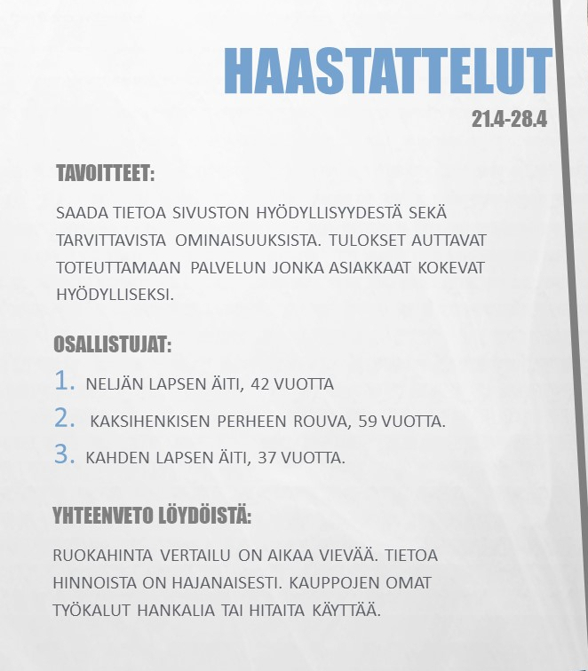
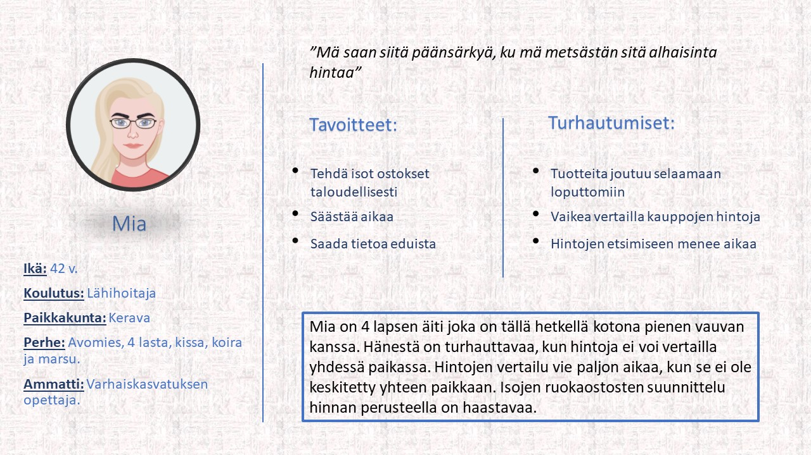
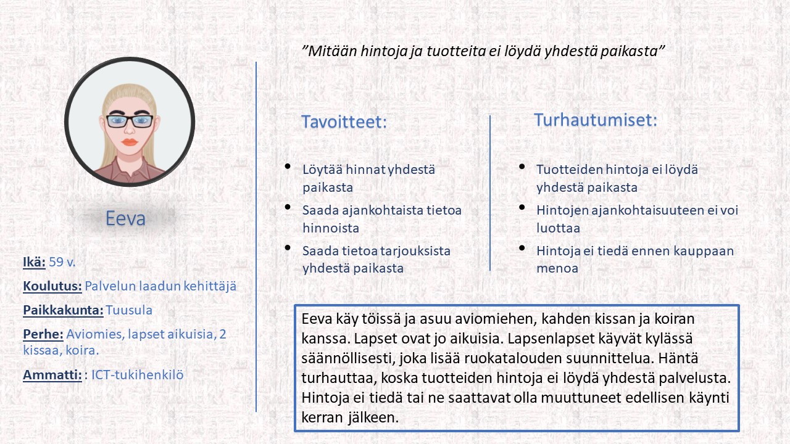
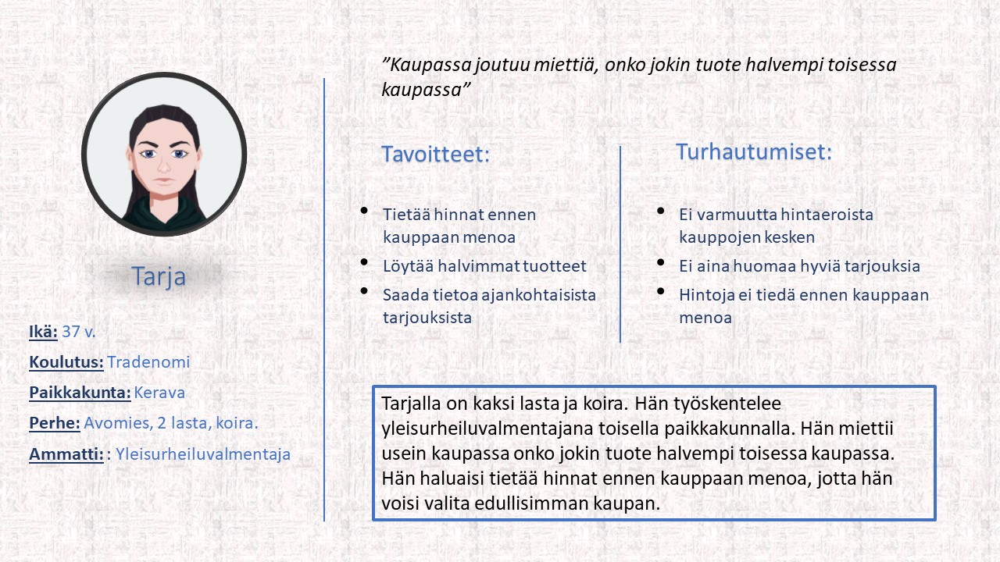
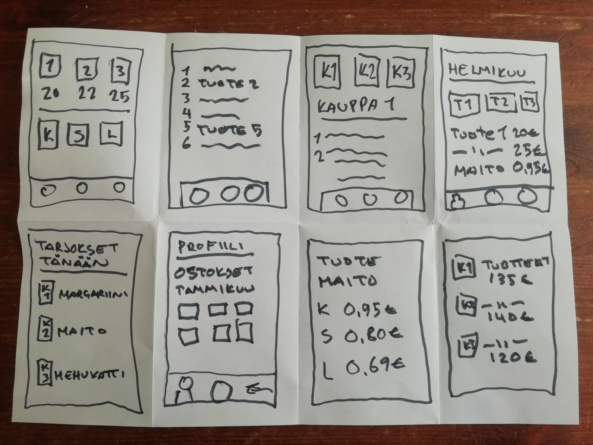

Ruokaostosten hintavertailusivusto
Projektin tausta
Tämä idea syntyi sen jälkeen, kun havaitsimme, ettei tällaista palvelua ole ruokaostoksille. Sivusto toimii työkaluna ruokaostosten hintavertailuun eri kauppojen ja ketjujen välillä. Tutkimuksen kohteena oli sivuston hyödyllisyys käyttäjälle sekä sivusto-ominaisuudet. Tulokset auttavat toteuttamaan palvelun, jonka käyttäjät kokevat hyödylliseksi. Henkilökohtaisesti olen kiinnostunut työkalusta, jolla olisi helppo vertailla pääosin ruokatuotteiden hintoja.
Ruokaostokset kattavat suuren osan perheellisen kuukausittaisesta budjetista. Tämän takia tutkimuksen kohteena olivat palvelun loppukäyttäjät, jotka ovat perheellisiä ja miettivät perheen ruokatarpeita pidemmäksi ajaksi kerrallaan. Tutkimukseen otettiin mukaan myös perhe, jossa lapset ovat jo aikuisia, tämän tarkoitus oli kartoittaa tuotteen hyödyllisyyttä myös pienemmille talouksille.
Käyttäjätutkimus
Haastatteluun valittiin perheellisiä henkilöitä, jotka käyttävät kaupan palveluja viikoittain. Osallistujat ovat perheellisiä, jotka ostavat verrattain suuria määriä ruokaa kuukausittain. Haastatteluun otettiin mukaan myös vanhemman ikäryhmän jäseniä, joilla ei enää ole taloudessa lapsia. Tämän tarkoitus on kartoittaa myös heidän tarpeensa ruokahinta vertailulle. Käyttäjiä haastateltiin selvittääksemme, millaisia ongelmia ja haasteita palveluun liittyy ja varmistaaksemme, että tämän kaltaisesta palvelusta olisi hyötyä ruokakauppojen asiakkaille. Haastattelut toteutettiin käyttäjien kodeissa, jotta se olisi haastateltavalle vaivatonta, eikä näin ollen haastateltavan tarvinnut siirtyä kodistaan muualle.
(Kuva suurenee klikkaamalla)
Haastattelujen jälkeen haastattelut litteroitiin ja analysoitiin temaattisesti. Koska haastattelut nauhoitettiin matkapuhelimella, ne oli helppo litteroida, kuunnella uudelleen tietokoneella ja analysoida sekä kerätä mahdollisten käyttäjien mainitsemia yhtäläisyyksiä.
Kuka, mitä ja miksi:
Mahdolliset käyttäjät, heidän ongelmansa ja käyttäjätarinat. Käyttäjiä kuvaillaan käyttäjäpersoonalla, jossa on eritelty tavoitteet, turhautumiset ja ongelmat. Myös käyttäjätarinat ovat listattuna alapuolella.
Potentiaalinen käyttäjä 1: Mia
(Kuva suurenee klikkaamalla)
Mian käyttäjätarinat
- Neljän lapsen äitinä haluan löytää ruoan hinnat yhdestä paikasta, jotta minun ei tarvitse käyttää aikaa hintojen etsimiseen.
- Isohkon perheen äitinä haluan löytää edullisimmat hinnat, jotta voin tehdä ostokset mahdollisimman taloudellisesti.
- Isojen ruokaostosten suunnittelijana haluan tietää ostosteni kokonaishinnan, jotta voin valita kaupan sen perusteella ja saada bonukset yhdestä ketjusta.
- Hintatietoisena haluan löytää myös ketjujen omien tuotteiden hinnat, jotta voin vertailla myös niitä.
- Puhelimen tehokäyttäjänä haluan myös käyttää tietokoneen selainta, jotta voin välttyä puhelimeni muistin täyttymiseltä.
- Käyttäjänä haluan listata kaupat, joissa käyn, jotta voin päättää kuinka kaukana olevat kaupat näkyvät.
- Käyttäjänä haluan selata tuotteita kategorian mukaan, jotta palvelua ja tuotteita ei tarvitsisi selata loputtomiin.
- Käyttäjänä haluan tietoa eduista ja tarjouksista, jotta tiedän mitä on tarjolla, milloinkin.
- Kaupan asiakkaana haluan tietoa tuotteista, jotta en maksa huonolaatuisista tuotteista.
Potentiaalinen käyttäjä 2: Eeva
(Kuva suurenee klikkaamalla)
Eevan käyttäjätarinat
- Kaupan asiakkaana haluan löytää hinnat ja tuotteet yhdestä paikasta, jotta minun ei tarvitse etsiä niitä.
- Kaupan asiakkaana haluan tietää hinnat etukäteen, jotta voisin arvioida, paljonko kauppaan kuluu rahaa.
- Kaupan asiakkaana haluan vertailla yhden tuotteen hintoja, jotta löytäisin edullisimman vaihtoehdon.
- Käyttäjänä haluan tietoa tarjouksista, jotta voin suunnitella kaupassa käynnin niiden perusteella.
- Käyttäjänä haluan tietoa hinnoista myös pienten ostosten osalta, jotta voisin valita edullisimman kaupan.
- Käyttäjänä haluan palvelun puhelin appina, jotta minun ei tarvitse käynnistää tietokonetta sen takia.
- Käyttäjänä haluan palveluun ostoslistan, jotta minun ei tarvitse aina kirjoittaa käsin tuotteita.
Potentiaalinen käyttäjä 3: Tarja
(Kuva suurenee klikkaamalla)
Tarjan käyttäjätarinat
- Kahden lapsen äitinä haluan tietoa hinnoista ennen, kun menen kauppaan, jotta minun ei tarvitse miettiä kaupassa onko jokin tuote toisaalla edullisempi.
- Kahden lapsen äitinä haluan vertailla hintoja etukäteen, jotta kaupassa käynti olisi tehokkaampaa.
- Kaupan asiakkaana haluan vertailla hintoja, jotta voin tehdä kauppalistan sen perusteella.
- Käyttäjänä haluan, että palvelu toimii useammassa alustassa, jotta voin vertailla hintoja sekä puhelimella, että tietokoneen selaimella.
- Käyttäjänä haluan ajankohtaista tietoa tarjouksista, jotta pysyn ajan tasalla hyvistä tarjouksista.
Tutkimuksen yhteenveto
Tutkimuksessa havaittiin, että haastateltavat kokevat ruoka hintavertailun hankalaksi sekä aikaa vieväksi. Tällä hetkellä olevat palvelut ovat hajanaisia sekä hankalia ja hitaita käyttää. Haastateltavat kokivat turhauttavaksi sen, että he voivat vertailla ruokaostosten hintaa vasta kaupassa, tai muistelemalla mitä tuote maksoi edellisellä kauppareissulla. Haastateltavista oli myös turhauttavaa se, että hintatietojen etsimiseen ennen kaupassa käyntiä menee paljon aikaa sekä sen, että hintatietoja on vaikea löytää. Isojen ruokaostosten suunnitteleminen taloudellisesta näkökulmasta on haastavaa, koska hintatietoja on vaikea vertailla etukäteen. Haastateltavien mielestä on myös merkittävää, että tuotetarjoukset olisivat ajan tasalla ja helposti löydettävissä. Suuri merkitys haastateltaville on myös, millä alustoilla palvelun tulisi toimia.
Mahdolliset ratkaisut
Käyttäjätarinoiden ja -ongelmien määrittelyn jälkeen ratkaisuja pohdittiin kirjoittamalla mahdolliset ratkaisut ja sitten piirtämällä ne. Luonnokset edustavat erilaisia käyttötapauksia, jotka ratkaisevat käyttäjien ongelmia ja myöhemmin nämä käyttötapaukset muodostaisivat pohjan ruokahinta vertailu palvelulle.
- Käyttäjä tarkistaa tietyn tuotteen hinnan ennen kauppaan lähtöä.
- Käyttäjä vertailee hintoja, koska suunnittelee ruokaostokset pidemmälle ajalle.
- Käyttäjä valitsee mieleisen kaupan hintavertailun perusteella.
- Käyttäjä tarkistaa ajan kohtaiset tarjoukset ennen kauppaan lähtöä, jonka perusteella valitsee kaupan, jossa tekee ruokaostokset.
- Käyttäjä valitsee kaupan sen tuotteen hinnan perusteella mitä tarvitsee suuren määrän.
Crazy eight
(Kuva suurenee klikkaamalla)
Crazy eight on nopea luonnosteluharjoitus, joka haastaa suunnittelijan luonnostelemaan kahdeksan erillistä ideaa kahdeksassa minuutissa. Tavoitteena on luoda laaja valikoima ratkaisuja haasteeseen.
Projekti oli mielenkiintoinen ja sitä tehdessä oppi paljon erilaisten ihmisten suhtautumisesta, odotuksista sekä näkökulmista samaan aiheeseen. Tutkimuksen avulla sain uusia näkökulmia mitä käyttäjät odottavat sovellukselta sekä minkälaisia ominaisuuksia siihen tulisi sisällyttää. Tutkimus auttoi myös havaitsemaan mitkä olisivat sovelluksen tärkeimmät ominaisuudet.